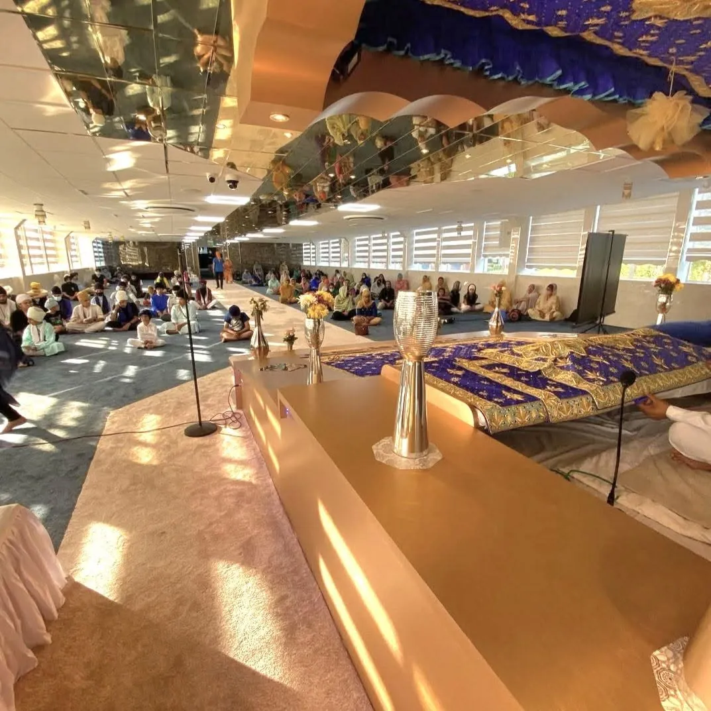

ALL ARE WELCOME ਜੀ ਆਇਆਂ ਨੂੰ
A house of prayer, heritage and sangat
A place of reflection, community and seva in Wolverhampton. Inspired by the teachings of Sri Guru Granth Sahib and our Ramgarhia heritage.
News & updates

Our new Nishan Sahib is raised
Ishnaan seva, the new Chola Sahib, Ardas and the raising. The day in photos.
See the photos →
A new foundation for our Nishan Sahib
From Ardas and groundwork to the concrete pour and the evening it was raised, step by step with photos and video.
Read the story →Life at the Gurdwara
Videos and photos from programmes and seva at Guru Ka Niwas, shared by the sangat.


Images and videos belong to the accounts shown and open on Instagram. To have a post removed, please contact the Gurdwara.
More than a name. A rich legacy of faith, resilience, craftsmanship and selfless service, carried forward through generations.


A moment
of stillness
Sri Harmandir Sahib is a place of deep significance for Sikhs worldwide. Here, the water of the sarovar gently moves in an artistic cinematic study.

A place for
everyone
Experience the meaning of sangat, Gurbani and the Sikh tradition of seva. Whether you are familiar with Gurdwaras or visiting for the first time, you are welcome.
Worship & Sangat Photographs of the Darbar Sahib and langar hall at Guru Ka Niwas, from the Gurdwara's own collection.